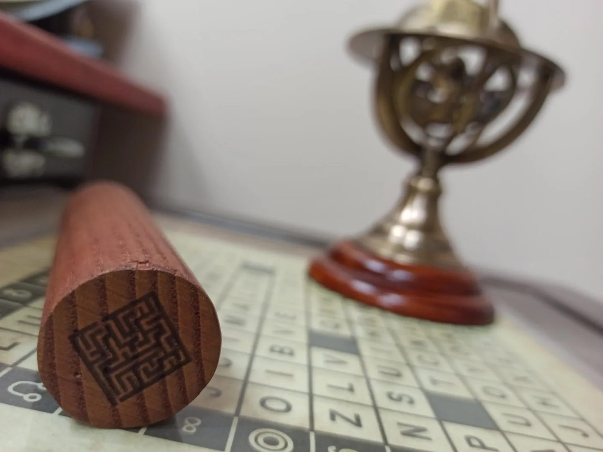
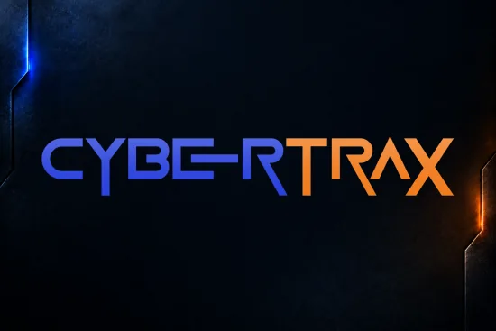

01 — LES ROUAGES DE L’APOCALYPSE
Un premier pas.
Mille questions.
Chaque détail est une piste.

02 — CYBERTRAX · PROCHAINEMENT
Un autre monde.
À découvrir.
CHÂLONS-EN-CHAMPAGNE · ESCAPE GAME
ELUCID
ESCAPE.
La curiosité ouvre
toutes les portes.
Faites défiler pour ouvrir